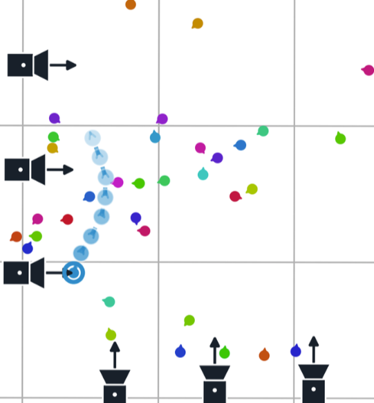

STEPS: The Scene Trajectories of Everyday Pedestrians Dataset
Under review at the 2027 IEEE International Conference on Robotics and Automation (ICRA)
* Equal contribution
STEPS is a pedestrian dataset collected continuously over several months. We capture interesting dynamics between stationary and moving pedestrians in an indoor setting. We demonstrate that models pretrained on STEPS perform comparably to models trained on a mix of outdoor benchmarks.